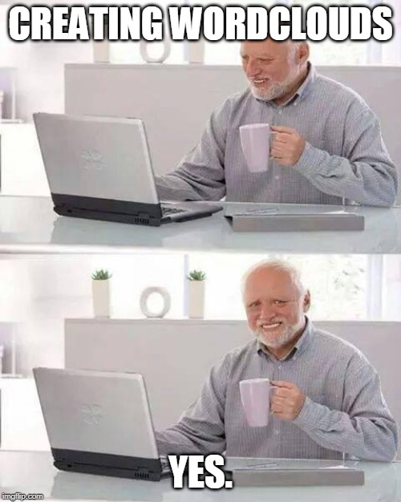
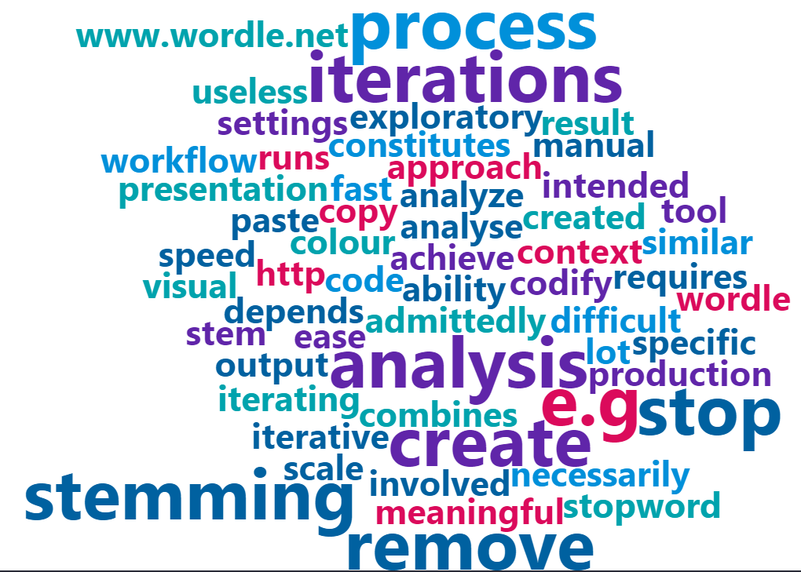

Anyone who has created wordclouds for a presentation before will know that it is an iterative process.
Not only do you have to remove “useless” stop words (e.g. the, at, am), you may also need to process word stemming so that words with the same stem do not appear more than once (e.g. “analysis”, “analyse”, “analyze”). What constitutes a stop word or what requires stemming depends on the specific context and what you wish to achieve with the word cloud.
Admittedly, this is less of a problem if the word cloud is intended as a tool for exploratory analysis. However if you are trying to create a meaningful visual output, there tends to be a lot of manual work involved, and iterating all the different runs of word clouds in code isn’t necessarily the best approach. In other words, it’s difficult to scale word cloud production!
The example below shows you how to create fast iterations of word clouds within R, not dissimilar to the workflow with Wordle.
This method combines the speed/ease of “copy-and-paste iterations” and the ability in R to codify word cloud “settings” such as colour and stop words to remove.
For this example, you need to have four packages 📦 installed: tidyverse, tidytext (for text mining), datapasta (for the easy copy-and-paste functions), and wordcloud2 for generating the word clouds (of course!). wordcloud2 generates interactive HTML wordclouds, so if you prefer outputs from the separate, older wordcloud package for any reason you can adapt the code below accordingly.
I would also load a short function that I called rgb2hex() that would allow me to specify RGB values to be used for the colours of the word clouds. The start of the script would therefore look as follows:
library(tidyverse)
library(tidytext)
library(datapasta)
library(wordcloud2) # Use wordcloud if you wish
rgb2hex <- function(r,g,b) rgb(r, g, b, maxColorValue = 255) # Load functionThe next step would then be to specify the colours that you want to use in your word cloud. Effectively, you’re creating a vector of character strings that specify the colours you want. The rgb2hex() function is used here to convert the RGB values, but if you prefer you can use the HEX codes directly, e.g. “#ff0000”.
colour_scheme <- c(rgb2hex(0,144,218),
rgb2hex(219,10,91),
rgb2hex(0,163,173),
rgb2hex(0,97,160),
rgb2hex(96,37,169))There may be some stop words that you want to ‘codify’ to minimise manual removal if you need to create several word clouds. Create a tibble here with a single column “word” to specify these words:
stopwords2 <- tibble(word = c("word",
"cloud",
"wordcloud"))What you can do next is to copy the text that you want so that it is saved to the clipboard. Run the line below - datapasta::vector_construct() stores the information from your clipboard which you can then assign to a vector; let us call ours copied_text in this example:
copied_text <- datapasta::vector_construct() # assigns to a variableThe next part is really where everything happens - where the copied text data gets cleaned up, structured into a ‘word count’ table, and turned into a word cloud.
copied_text %>%
enframe(name = "line", value = "text") %>% # Convert text into a tibble
tidytext::unnest_tokens(output = word, # tokenise - one word per row
input = text,
token = "words") %>%
mutate_at("word", ~str_replace_all(.,"clouds","cloud")) %>% # Manual word stemming
anti_join(tidytext::stop_words, by = "word") %>% # Remove stop words using tidytext
anti_join(stopwords2, by = "word") %>% # Remove additional stop words
count(word, name = "freq") %>%
wordcloud2::wordcloud2(size = 1,
ellipticity = 1,
rotateRatio = 0,
color = sample(colour_scheme, nrow(.), replace = TRUE))Here’s a step-by-step walk through of the code:
enframe() is a function from tibble 📦 that converts the unstructured text into a tibble / data frame object.unnest_tokens() is a function from tidytext 📦. This ‘tokenises’ the text into one word per row - which is a necessary step for creating the word cloud.str_replace_all() together with mutate_at() to stem words manually. This step is optional.anti_join() and tables of stop words to remove unhelpful words. This step is also optional.count() creates a word count of the frequencies of each word, returning a tibble with two columns: word and freq.wordcloud2::wordcloud2() runs the word cloud from the input. In the color argument, the colour_scheme that we defined at the beginning is used. I used this in combination with sample() to randomly distribute the colours amongst the different words. Do check out the documentation for wordcloud2 📦 for other available settings / arguments in that function!Note: you can also pipe saveWidget() and webshot() at the end of the code to save the word cloud as an image. For more info, check out this discussion.
In this example, I simply used the first paragraph of this post as an input. Here’s what it looks like: 
You can really quite easily try this out on any bunch of text that you want - simply copy, paste, and run. Enjoy! 😄